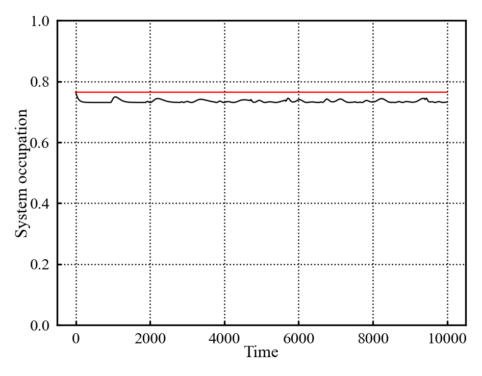
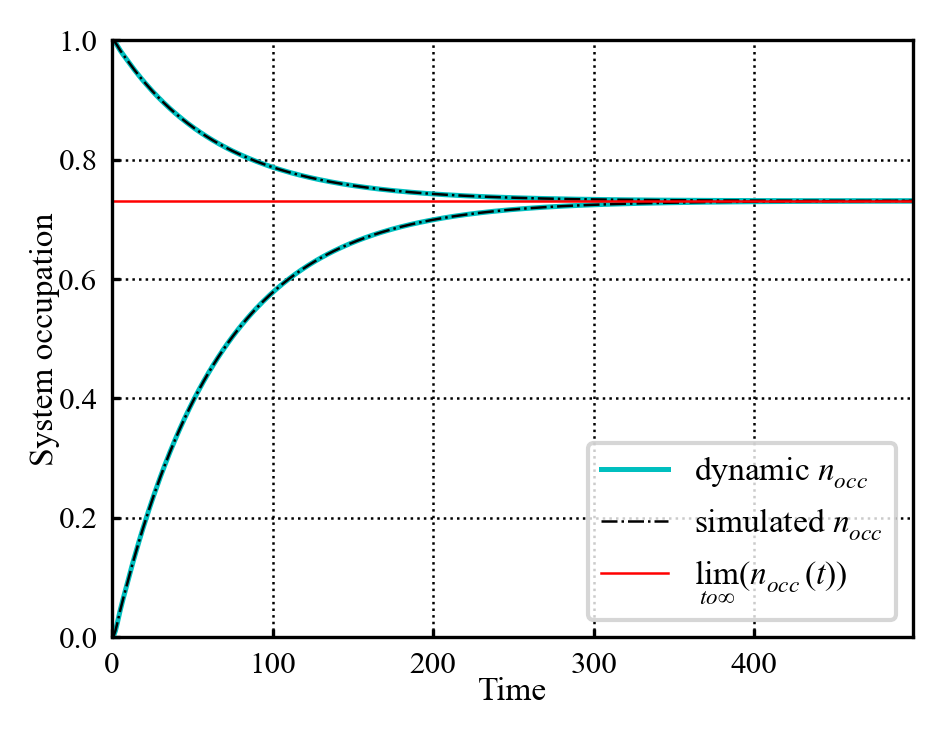

14/10/2026
Supervisor meeting:
Dynamical map vs simulation plot atop on ech other to confirm
potential stretch goals:
- different spectral function
- 2 site impurity potentially
TTM - plotting error more specifically
TTM - discretization error is less important than thought - TT is exact for its timestep which is what we’re interestint
avoid non thermalizing bound states as a general rule (may be interesting as stretch goal)
wierdness for system energy near bounds of bath - non thermalization
presentation:
- need to convey why is this question interesting
- don’t need to overdo it; can keep it fairly conceptual
try evolution which starts at thermalization - it may do some wierd stuff
recent paper which bites out semi circle - spectral function relation to memory; correlations in the bath - acquire later
To do:
- dynamical propagation vs simulation propagation plot - subtract em from each other to show they equal
- Consider plotting simulation evolution that starts at thermalization occupancy
- attempt TTM implementation - don’t worry if it takes longer; switch to presentation otherwise
- If it works quickly, plot it over a basic testing range of parameters
- Draft presentation:
- Setup slides
- use slides to figure out what additional plots i’d like to generate for illustrative purposes
17/10/2026
Going to start on the presentation today. Copy/pasting the things i need to include:
- Field background - memory effects in quantum thermodynamic systems
- Project impetus - unclear and somewhat contradicting memory definitions for quantum non markovianity vs classical non markovianity
- Project setup - simulation of star geometry system in order to produce dynamical maps which can be used to test different memory definitions
- Work done thus far
- Preliminary results
- Future plans
Setting up slides as:
- Title slide
- Field background
- Quantum thermodynamics as a concept
- Compare to classical thermodynamics – recap concepts of system, bath, thermalization - stochastics may also be worth mentioning
- Introduce classical ideas of memory effects/markovianity
- Project motivation and background
- State that memory effects in quantum systems aren’t fully understood
- This project aims to compare different definitions of non markovianity by numerical simulation
- Name drop three definitions
- This is being done in order to provide additional research context to this area
- Project setup (model explanation)
- introduce computational model:
- 1 dot system connected to a discreetized bath
- Note this discreetized bath is different to classical case where bath is assumed homogeneous
- Note spectral function as characterizing bath shape (plot may be useful here)
- maybe show hamiltonian?
- introduce computational model:
- Work done thus far part 1:
- Build up simulation utility - use this as opportunity to explain how the simulation is being propagated through time
- Show initial simulation test data here (gif of bath/system occupation evolution may help show what this evolution looks like)
- maybe run an additional sim where the system starts at thermalization - show plot w/occupation start 0, 1, n_{thermal} all in one plot - use this to highlight the wierdness of quantum memory effects
- Work done thus far part 2:
- Build up dynamic map extraction - explain dynamic map is “reduced” object which contains full dynamical information
- Show the simulation vs dynamic map evolution to show that this does indeed perfectly encapsulate the dynamics of the system
- State that this object is what will be analysed to extract memory definitions
- Future plans:
- Implement memory definitions:
- immediate next step: implement memory kernel definition as “pathfinding” def for formalism
- examine it’s data to gain familiarity w/memory
- Implement other memory definitions using the insight gained
- test the definitions against each other with the spectral function as the main “experimental nob”
- Implement memory definitions:
- Bibliography
Given that, have quickly tested the initially thermalized occupation setup, and it is indeed odd:

Which is what was expected; good to see that it behaves interstingly.
Also looking to generate gif versions of some of the plots for presentation reasons using (pltGifs?), (Daniel 2018). Have fiddled a bunch and produced the following:
which quarto doesn’t seem to be rendering… tmr problem.
18/10/2026
Fiddled a bit more w/animation plotting to give better control over animation length. Am having issues displaying these on quarto; attempting to troubleshoot. Can’t display local mp4 or gif, however can display yt vid. Its fine… Spent some time quickly tidying up the simulation queue code - packed sim args into a dictionary to make variations and “standard sets” easier. Have also built some additional utilities to make running datasets and such easier.
Am trying to reproduce these Figure 1 results after cleaning up the code, however can’t. I suspect i made a coding error when producing this plot and accidentally added a small value to the analytical thermalization. Figure 1 seems to thermalize to a\(n\approx 0.73\) in this plot (before recurrence due to model finite size occurs). As such, i think this plot is wrong and to be disregarded.
Have produced plot of dynamic vs simulated evolution:

As well as adding some utilities to make using the dual sim system easier.
Have produced animated gif illustration of star geometry setup for the dissertation presentation.
19/10/2026
Am thinking in terms of what background/theoretical content needs to be included. It’d be good to include the names/equations for the different non markovianity defs.
(Rivas and Huelga 2012) includes explanation of memory kernels.
(Milz and Modi 2021) may also be a good resource; it includes classical non markovianity which will be a useful reference point for presentation reasons.
Reading notes (Milz and Modi 2021)
This is a long review paper. Introduction helps motivate the topic. Open systems are ones connected to some external environment that cannot be modelled for computational reasons. Stochastics aims to treat these environmental interactions statistically in order to model the system. Practical interest for range of reasons:
- better understanding of environmental interaction will help create fault tolerant qubits for quantum computing reasons
- Modelling many body quantum systems, with applications across condensed matter physics, quantum chemistry…
This review aims to introduce and explain memory effects in quantum stochastic processes, and relate them to classical stochastic theories.
Section 2 of the paper outlines classical examples; this will likely be quite useful for presentation reasons. Uses the example of sequential random dice tosses in order to illustrate stochastic processes. Uses this to illustrate memory effects - probability \(P_{n}(O)\) does not depend on previous outcomes for memoryless systems. “Memoryless” Markov processes are introduced.
The dice example may be a good example to use; i wonder if a random walk could help illustrate a non markovian process visually. Paper uses examples of poorly retossed dice instead to illustrate conditional probability on past events.
This paper looks quite interesting and worth going into greater depth later; for now however am just going to extract things useful for presentation. The poorly tossed dice example is probably useful way of illustrating memory effects; although i do wonder if a random walk may be better.
Quickly checking through the rest of the paper, it does discuss the complete-positivity memory definition.
presentation work continued
(Breuer, Laine, and Piilo 2009) is seemingly the original paper discussing information backflow. Therefore for the 3 measures mentioned, i think i can cite them from:
- memory kernels (Rivas and Huelga 2012)
- Information backflow (Breuer, Laine, and Piilo 2009)
- Failure of complete positivity (Milz and Modi 2021)
Thats reassuring. Have produced a diagram to illustrate open vs closed systems. I think the best way to illustrate that is unfortunately showing the conditional probability expression for a set of sequential events w/memory. I’d rather do it diagramatically, however am unsure there is a good way to do so… Might be able to do it as a table of outcomes over time steps; one column represents a memoryless system, the other a memory-full system - can then show memory effects timestep by timestep using a concrete example.
Have ignored that for now and gotten most of the rest of the presentation drafted.
Have got a full draft (minus the references which can be added later) here: presentation draft